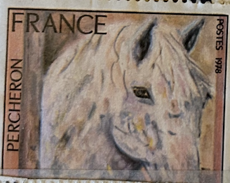
| SOURCE | TITLE| IMAGE MATCH | click to source page |
| www.ebay.com | France Stamp No. 1982a Not Serrated Imperf N** /MNH | eBay | 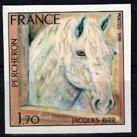 |
| frenchphilately.com | 1978 Yt 1982 Percheron by Jacques Birr Sc 1580 - French ... | 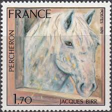 |
| www.ebay.com | France Stamp Issue Complete Scott # 1580 Unused Never Hinged ... | 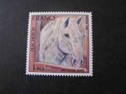 |
| www.ebay.com | FRANCE 1580 MNH imperf HORSE, ART | eBay | 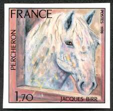 |
| www.wikitimbres.fr | Timbre : 1978 PERCHERON | WikiTimbres | 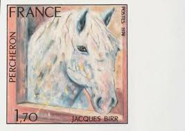 |
| www.leboncoin.fr | Année 1978 : timbre français d'occasion réf 1982 - Collection | 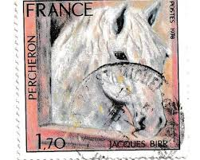 |
| lamasbolano.com | SELLOS FRANCIA 1978 - PINTURA DE JACQUES BIRR - 1 VALOR - CORREO | 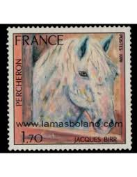 |
| www.yvert.com | n° 1982 - Timbre France Poste | 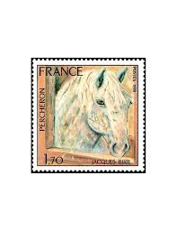 |
| 1001pocztowek.pl | FRANCJA SZTUKA NATURA - PERSZERON KOŃ MAXIMUM POCZTÓWKA ... | 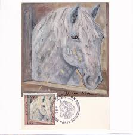 |
| esam.ir | تمبر تابلویی فرانسه سری کامل نقاشی یاکوب بیر | 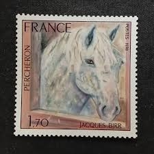 |
| www.mercadolibre.cl | Estampilla Francesa Del Año 1978 (percheron) | Cuotas sin ... | 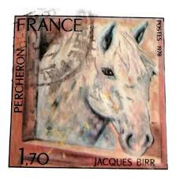 |
| en.todocoleccion.net | francia. mnh **yv 552c. 1942. 1´50 fr ultramar. - Buy ... | 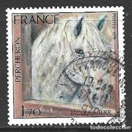 |
| www.ebay.com | France 1978 Percheron Horse,Painting,Art,Animals MNH | eBay | 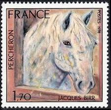 |
| www.tmphilatelie.com | Timbre de collection France - 1982a Non Dentelé | 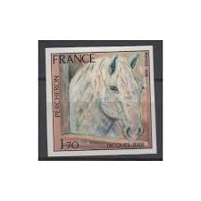 |
| filatelia.store | ⭐ FR 1982. Percherón, de Jacques Birr. 1'70F. **1978 ⭐ 0,30€ | 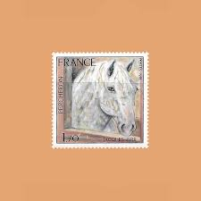 |
| www.osta.ee | Prantsusmaa, 1978 puhas (247147613) - Osta.ee | 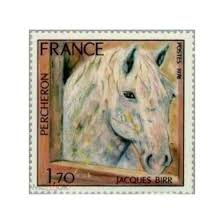 |
| www.etsy.com | Roan Horse Art Signed Matted Print by Cori Solomon - Etsy | 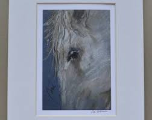 |
| www.actualitephilatelique.fr | Timbre / Lot : N° 1982 cheval rose tàn | À Collectionner | 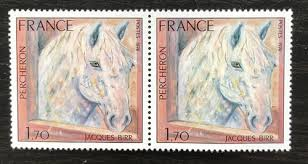 |
| www.leboncoin.fr | FRANCE 1978 - TIMBRE N° - 1982 - 1987 - 1996 - 1997 - 1998 ... | 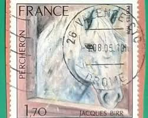 |
| www.etsy.com | Colorful Horse Original Hand Painting - Etsy | 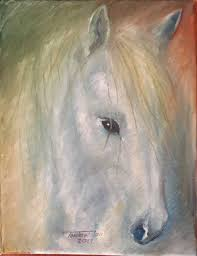 |
| aukro.sk | Známky Francúzsko 1978, Maliarstvo - Obrazy, Kôň Percheron ... | 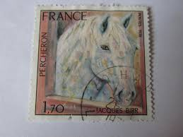 |
| www.athome.com | Black & White Horses Canvas Wall Art, 24x36 | At Home | 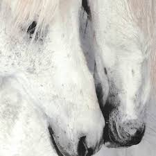 |
| frenchphilately.com | 1968 Yt 1555a Prehistoric cave of Lascaux Sc 1204imp ... | 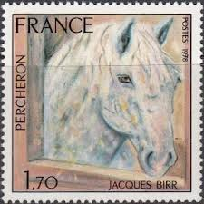 |
| www.alamy.com | Postage stamp from France depicting the Yves Brayer painting ... | 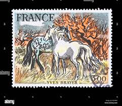 |
| www.facebook.com | I am quite new to painting, and I love horses. Watercolour ... | 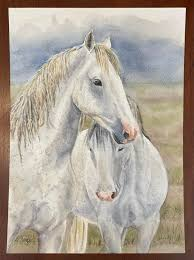 |
| www.1stdibs.com | Jan Grotenbreg - 'White Horse' Dutch Contemporary Fresco ... | 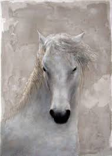 |
| www.ugallery.com | Brave One by Alana Clumeck - oil painting | UGallery | 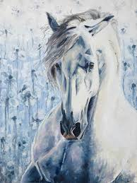 |
| fr.shopping.rakuten.com | Timbre Neuf - Tableau de Jacques Birr - Percheron - Année ... | 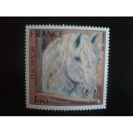 |
| www.lastdodo.com | Painting Yves Brayer 3,00 (1978) - France - LastDodo | 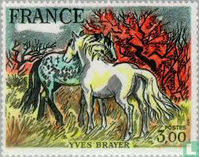 |
| sorrelsky.com | Horse Rich | Contemporary Painting | Horses | Sorrel Sky Gallery | 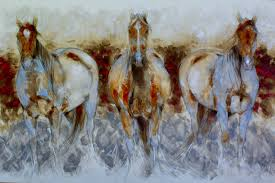 |
| www.todocoleccion.net | sellos aviacion francia 1970 mermozy antoine de - Compra ... | 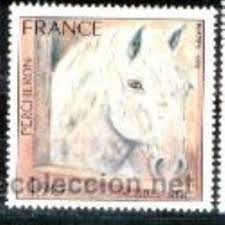 |
| www.zazzle.com | AR22 White Horse over Fence Equine Canvas Print | Zazzle | 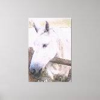 |
| www.facebook.com | 🐎 "White Beauties" - Horses / 🎨 Watercolor Painting ... | 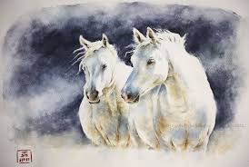 |
| www.instagram.com | Toulouse-Lautrec painted horses as expressions of movement ... | 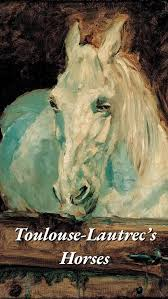 |
| babettesonline.com | WHITE PRINCE HORSE CANVAS | Babette's Furniture & Home | 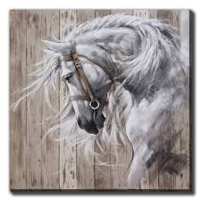 |
| www.hipstamp.com | France, 1.70fr Percheron (SC# 1580) MNH | Europe - France ... | 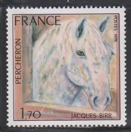 |
| www.tractorsupply.com | Melrose International Framed Horse Canvas Art 24 in. SQ at ... | 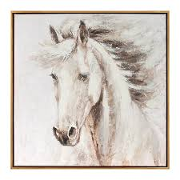 |
| www.allartclassic.com | Two Galloping Horses in Snow, 2019 Original Oil Painting | 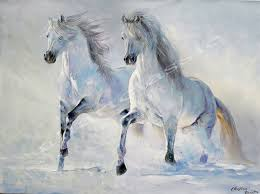 |
| www.ebay.com | Horses Paintings Art 2002 Korea MNH 4 v perf Set + 4 X 4 ... | 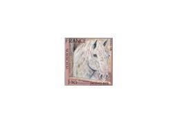 |
| www.leboncoin.fr | 713 1978 1982 Percheron 0,25 nsc - Collection | 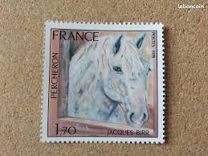 |
| spirithorse.gallery | Spirit Horse and Rainbow Herd ponies southwest, native ... | 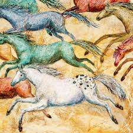 |
| www.kaylacuellarart.com | Spirit of Lost River Valley”" | Kayla Cuellar Art | 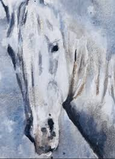 |
| joniandfriends.org | Horse In Wild Mustard | Joni and Friends | 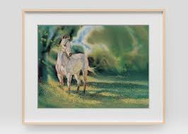 |
| www.etsy.com | White Beauty Rustic Horse Painting Original Art on Canvas ... | 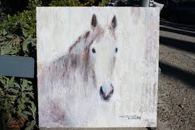 |
| magickalmusings.blog | Day 1: The Lenormand Challenge – The Magickal-Musings of ... | 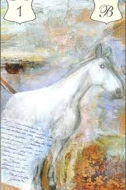 |
| daretobevintage.com | Sallie Mae' Whimsical Horse Fine Art Giclée Prints – Dare To ... | 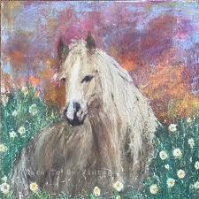 |
| www.djgeribofineart.com | Above Knee Deep in Snow | 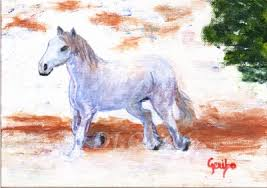 |
| www.instagram.com | Sharing my latest work - from its first line to its final ... | 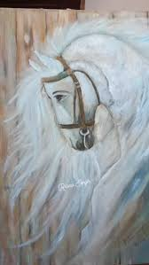 |
| www.artmajeur.com | White Horse, Painting by Olga Metz | ArtMajeur | 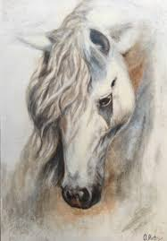 |
| www.stampedia.net | stampedia FRANKREICH BRIEFMARKEN catalog | |
| www.julieloomer.com | French Country Gilded Vintage Horse Portrait Art "La Belle ... | |
| fineartamerica.com | The Night Horses Painting by Tracie Thompson - Fine Art America | |
| www.todocoleccion.net | francia yvert 1846 serie completa usada 1975. t - Compra ... | |
| www.fulcrumgallery.com | Joadoor - Emperor Size 31.5x23.75 Fine Art Print by Joadoor ... | |
| www.formaltraditional.com | Studio | Formal Traditional | |
| www.potterybarn.com | Wild Horse Study Painting by Lauren Herrera | Pottery Barn | |
| animalsonstamps.wordpress.com | Horses On Stamps | Animals On Stamps | |
| www.youtube.com | How to Paint THIS Horse with Watercolor?! - YouTube | |
| www.facebook.com | Working with Large Paper Sizes in Watercolor Painting |